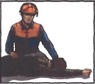
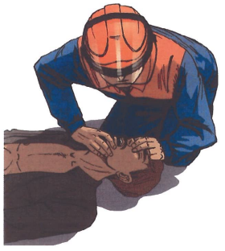

Билет №9
Вопрос 1. Требования охраны труда к каскам защитным. (ИОТВ-60-15, п.2.1.)
Ответ:
2.1.1. Работники: подземного и капитального ремонтов скважин (постоянно); выполняющих строительно-монтажные работы (постоянно); при работе в электроустановках (постоянно); при проведении работ на высоте и в закрытых емкостях, траншеях, колодцах (постоянно); погрузочно-разгрузочных работ (при производстве работ), в т.ч. с применением грузоподъемных механизмов (постоянно), а также рабочие, находящиеся в зоне возможного падения или отлета предметов, должны работать в защитных касках, в холодное время - в касках с подшлемниками.
2.1.2. Требования к каскам защитным:
наружная поверхность корпуса каски должна быть гладкой, без трещин и пузырей. На поверхности корпуса каски допускаются включения другого цвета в количестве, допустимом нормами на материалы;
внутренняя поверхность корпуса каски, а также наружная и внутренняя поверхности оснастки должны быть гладко обработаны, а края и кромки притуплены;
каска должна иметь подбородочный ремень для закрепления.
2.1.3. Каски должны сохранять защитные свойства в течение всего срока эксплуатации при температуре окружающей среды от минус 50°С до плюс 40°С.
2.1.4. Каски не подлежат ремонту.
2.1.5. Каски подвергаются ежедневному осмотру в течение всего срока эксплуатации с целью выявления дефектов. Запрещается эксплуатация касок с отсоединенными или поврежденными элементами, трещинами, а также подвергшемуся сильному удару. Не допускается подвергать каски сильной боковой деформации и попаданию брызг расплавленного металла. В случае выявления указанных повреждений работник обязан сдать каску непосредственному руководителю работ и получить исправную.
2.1.6. Срок хранения и эксплуатации касок - 24 месяца со дня изготовления. По окончанию срока носки каска должна быть изъята из эксплуатации и разрушена. Дата изготовления, размер, температура маркируются на внутренней стороне козырька корпуса. Каски в случае загрязнения допускается обрабатывать мыльным раствором с последующей промывкой чистой водой.
2.1.7. Каски в процессе эксплуатации хранятся не ближе 1 метра от нагревательных и отопительных приборов.
2.1.8. Перед началом работы работник обязан провести осмотр - убедиться в отсутствии повреждений и расслоения элементов, а также произвести подгонку внутренней оснастки по размеру головы перестановкой соединительных элементов.
2.1.9. Защитная каска состоит из корпуса и внутренней оснастки. Внутренняя оснастка - общая конструкция, предназначенная для того, чтобы:
а) удерживать каску на голове/или;
б) поглощать кинетическую энергию, возникающую при ударе, и распределять усилие по поверхности головы.
2.1.11. Каска должна иметь подбородочный ремень. Ширина ремня - не менее 10 мм. Элементы крепления подбородочного ремня могут располагаться на корпусе каски или на несущей ленте.
2.1.12. Расстояние по вертикали от верхней точки головы, на котором крепится каска, до верхней точки на наружной поверхности защитной каски называется внешним вертикальным расстоянием (это высота наружной поверхности каски над головой при надетой каске и это имеет отношение, например, к свободному пространству при низких перекрытиях). Величина внешнего вертикального расстояния должна быть не более 80 мм.
2.1.13. Разница по высоте высшей точки наружной поверхности защитной каски над высшей точкой головы в случаях, когда в каске имеется внутренняя оснастка и когда корпус каски надет на голову без оснастки, называется внутренним вертикальным расстоянием (определяет устойчивость положения защитной каски на голове). Внутреннее вертикальное расстояние должно быть не более 50 мм.
2.1.14. Расстояние по вертикали между внешней поверхностью амортизатора и внутренней поверхностью корпуса каски называется вертикальным безопасным зазором (это расстояние имеет отношение к вентиляции внутреннего пространства). Вертикальный безопасный зазор должен быть не менее 25 мм.
2.1.15. Расстояние между несущей лентой и внутренней поверхностью корпуса называется кольцевым зазором. Измеряется спереди по оси симметрии макета головы и сбоку (по середине между передней и задней сторонами макета головы). Расстояние между несущей лентой и корпусом защитной каски (спереди и по бокам) должно быть не менее 5 мм.
2.1.16. Расстояние по вертикали от нижней кромки несущей ленты до верхней точки головы, на который надевается каска называется высотой ношения. Это расстояние измеряют спереди (в середине между височными частями головы) или сбоку (в середине между лобной и затылочной частями головы), в зависимости от того, какое расстояние больше.
В касках предусмотрена возможность регулирования высоты ношения защитной каски. Высота ношения спереди и по бокам защитной каски не должна превышать 80 мм.
2.1.17. Работник, применяющий каску в процессе работ, обязан знать назначение, параметры и способы регулирования элементов каски.
Защитную каску, получаемую в индивидуальное пользование, работник обязан отрегулировать под собственные размеры головы с учетом требований пп.2.1.11 -2.1.16 настоящей инструкции и применять на практике.
Вопрос 2. Какие опасные и вредные производственные факторы могут воздействовать на работника при пайке паяльником. (ИОТВ-77-15, п.1.3.)
Ответ:
При пайке паяльником на работника могут воздействовать опасные и вредные производственные факторы:
опасное значение напряжения в электрической цепи;
повышенная температура поверхности оборудования, применяемых материалов;
наличие вредных химических веществ в воздухе рабочей зоны;
повышенная или пониженная температура воздуха;
недостаточная освещенность рабочей поверхности.
Вопрос 3. Требования охраны труда перед началом работ в цепях электроизмерительных приборов? (ИОТВ-105-14, п.2.)
Ответ:
2.1. Получить письменное задание (в «Журнале выдачи сменного задания») под подпись на выполнение работ у непосредственного руководителя работ и инструктаж по безопасному выполнению работ.
2.2. Привести в порядок спецодежду, спецобувь и индивидуальные защитные средства - проверить их исправность.
2.3. Подготовить и осмотреть ручной инструмент и контрольно-измерительные приборы. При обнаружении неисправности сообщить мастеру и до замены к работе не приступать.
2.4. Подготовить необходимые принципиально-монтажные схемы, паспорта протоколы.
2.5. Ознакомиться с данными карт уставок.
2.6. Получить наряд-допуск на производство работ в действующих электроустановках.
Вопрос 4. Назовите порядок оказания первой помощи при переохлаждении и обморожении. (Инструкция для проведения обучения оказания первой помощи пострадавшим на производстве, п. 16.-16.3.)
Ответ:
16. Действия в случае первой стадии переохлаждения:
Признаки первой стадии переохлаждения:
посинение губ и кончика носа;
озноб, мышечная дрожь, "гусиная" кожа;
обильные пенистые выделения изо рта и носа.
1) По возможности дополнительно надеть теплую одежду. Заставить двигаться.
2) Предложить теплое сладкое питье, теплую пищу, сладости.
Внимание! Первая стадия переохлаждения носит защитный характер и не опасна для жизни. Достаточно использовать дополнительную теплую одежду, заставить двигаться и принять теплую пищу или сладости, чтобы не допустить наступления более опасной стадии переохлаждения.
Если после извлечения из проруби нет запаса сухой одежды и возможности развести костер? По возможности проложить между телом и мокрой одеждой любую бумагу и продолжить движение к населенному пункту. Через 5-7 минут бумага начнет высыхать и станет хорошим теплоизолятором.
16.1. Действия в случае второй и третьей стадий переохлаждения: Признаки второй и третьей стадии переохлаждения (по мере появления):
побледнение кожи;
потеря чувства холода и ощущение комфорта на морозе;
благодушие и эйфория или немотивированная агрессия;
потеря самоконтроля и адекватного отношения к опасности;
появление звуковых, а чаще зрительных галлюцинаций;
вялость, заторможенность, апатия;
угнетение сознания и смерть.
1) Предложить теплое сладкое питье, теплую пищу, сладости.
2) Как можно скорее доставить в теплое помещение.
3) Если нет признаков обморожения конечностей, снять одежду и поместить в ванну с теплой водой или обложить большим количеством грелок.
Внимание! Прежде чем погружать пострадавшего в воду, следует обязательно проконтролировать ее температуру своим локтем.
4) После согревающей ванны надеть сухую одежду, укрыть теплым одеялом и продолжать давать теплое сладкое питье до прибытия медперсонала.
Внимание! Недопустимо предлагать алкоголь пострадавшему, лежащему в воде.
16.2. Действия в теплом помещении в случае обморожения стоп:
Признаки обморожения:
потеря чувствительности в пальцах;
изначально бледная кожа, через несколько часов багровеет и появляются пузыри.
1) Перед входом с мороза в теплое помещение постучать носком обуви одной ноги по пятке другой. Если кончики пальцев стопы ничего не чувствуют, сухую обувь в помещении не снимать.
2) Выпить 3-4 стакана теплого сладкого чая.
3) Через 10-15 минут, когда появятся боли в области обморожения, снять обувь, обработать кожу водкой или спиртом и провести массаж голени по направлению от коленного сустава к большому пальцу стопы.
Внимание! Нельзя помещать обмороженные конечности в теплую воду или обкладывать грелками.
Если обувь сырая или дырявая - снять обувь и укутать конечность теплым одеялом или надеть сухие валенки. Если кожа побагровела и появились пузыри - накрыть чистой тканью.
16.3 Действия на морозе в случае обморожения носа, ушей и пальцев рук:
Признаки обморожения:
побледнение кожи
потеря чувствительности
1) Снять рукавицы и по возможности обработать свои руки водкой или спртом.
2) Растереть ладини до ощущения тепла.
3) прислонить свою теплую ладонь к участку побелевшей кожи на носу, щеке или ушам на 2-3 минуты.
4) повторить эту процедуру до порозовения кожи и укутать шарфом, платком, рукавицей или шапкой.
5) предложить пострадавшему теплое сладкое питье, теплую пищу, сладости.
Внимание! Нельзя растирать обмороженную кожу, смазывать маслами или вазелином.
Вопрос 5. Классификация взрывоопасных зон. (ИОТВ-102-14, п.1.5-11.)
Ответ:
1.5. Взрывоопасная зона - помещение или ограниченное пространство в помещении или наружной установке, в котором имеются или могут образоваться взрывоопасные смеси.
1.6. Класс взрывоопасной зоны, в соответствии с которым производится выбор электрооборудования, определяется проектной организацией.
1.7. Взрывоопасные зоны нефтяной промышленности характеризуются, согласно ПУЭ, в основном четырьмя классами: B-l, B-Ia, B-Iб и В-1г.
1.8. Зоны класса В-I - зоны, расположенные в помещениях, в которых взрывоопасные смеси могут образоваться при нормальных недлительных режимах работы, например при загрузке или разгрузке технологических аппаратов, при хранении или переливании легковоспламеняющихся жидкостей, находящихся в открытых сосудах.
1.9. Зоны класса В-Iа - зоны, расположенные в помещениях, в которых при нормальной эксплуатации взрывоопасные смеси горючих газов или паров ЛВЖ с воздухом не образуются, а возможно только в результате аварий или неисправностей;
1.10. В класс B-Iб входят те же помещения, что и в класс B-Ia, но имеющие такие особенности:
горючие газы в этих зонах обладают высоким нижним концентрационным пределом воспламенения (15% и более) и резким запахом при предельно допустимых по санитарным нормам концентрациях;
образование в помещениях в аварийных случаях общей взрывоопасной концентрации по условиям технологического процесса исключается, возможна лишь местная взрывоопасная концентрация;
горючие газы и легковоспламеняющиеся жидкости имеются в помещениях в небольших количествах, не создающих общей взрывоопасной концентрации, и во время работы с ними не применяется открытое пламя;
если работы на этих установках выполняются в вытяжных шкафах или под вытяжными зонами, эти установки относятся к невзрывоопасным.
1.11. Зоны класса В-Iг - пространства у наружных установок: технологических установок, содержащих горючие газы или ЛВЖ, надземных и подземных резервуаров ЛВЖ или горючими газами (газгольдеры), эстакад для слива и налива ЛВЖ, открытых нефтеловушек, прудов-отстойников с плавающей нефтяной плёнкой и т.п.
Вопрос 6. В каких случаях пострадавшему проводятся реанимационные мероприятия и как они выполняются (с отработкой практических навыков на тренажере). (Инструкция для проведения обучения оказания первой помощи пострадавшим на производстве, п. 4.2.-5.9.)
Ответ:
4.2 Последовательность действий при оказании первой медицинской помощи:
Такая очередность действий позволит сохранить жизнь пострадавшего до прибытия медицинских работников |
1. |
Нет сознания и нет пульса на сонной артерии (клиническая смерть) |
 |
Приступить к реанимации (см. п.5) |
2. |
Нет сознания, но есть пульс на сонной артерии (обморок или начало развития комы) |
 |
Попытаться привести пострадавшего в сознание (см. п.6)
Если в течени 3-4 минут это не удалось, обязательно повернуть его на живот (см. п.7) |
3. |
Обильное кровотечение |

|
Быстро пережать конечность выше раны и наложить жгут (см. п.9) |
4. |
Наличие раны |

|
Наложить стерильные повязки (см. п.10.3) |
5. |
Признаки перелома конечностей |

|
Наложить транспортную шину (см. п.11) |
5. Правила определения признаков клинической смерти:
Правило первое.
Чтобы сделать вывод о наступлении клинической смерти у неподвижно лежащего пострадавшего, достаточно убедиться в отсутствии сознания и пульса на сонной артерии.
Правило второе.
Не следует терять время на определение сознания путем ожидания ответов на вопросы: «Все ли у тебя в порядке? Можно ли приступить к оказанию помощи?». Надавливание на шею в области сонной артерии является сильным болевым раздражителем.
Правило третье.
Не следует терять время на определение признаков дыхания. Они трудноуловимы, и на их определение с помощью ворсинок ватки, зеркальца или наблюдения за движением грудной клетки можно потерять неоправданно много времени. Самостоятельное дыхание без пульса на сонной артерии продолжается не более минуты, а вдох искусственного дыхания взрослому человеку ни при каких обстоятельствах не может причинить вреда.
Если подтвердились признаки клинической смерти? Быстро освободить грудную клетку от одежды приступить к сердечно-легочной реанимации см. пп.5.5; 5.6.

5.1. Правила определения пульса на сонной артерии:
Правило первое.
Расположить четыре пальца на шее пострадавшего (см. п.5.4) и убедиться в отсутствии пульса на сонной артерии.
Правило второе.
Определять пульс следует не менее 10 секунд.
5.2. Правила освобождения грудной клетки от одежды для проведения реанимации:
Правило первое.
Расстегнуть пуговицы рубашки и освободить грудную клетку.
Правило второе.
Джемпер, свитер или водолазку приподнять и сдвинуть к шее.
Правило третье.
Майку, футболку или любое нательное белье из тонкой ткани можно не снимать. Но прежде чем наносить удар по грудине или приступать к непрямому массажу сердца, следует убедиться, что под тканью нет нательного крестика или кулона.
Правило четвертое.
Поясной ремень обязательно расстегнуть или ослабить. Известны случаи, когда во время проведения непрямого массажа сердца печень повреждалась о край жесткого ремня.

Внимание! Перед тем как приступить к реанимации, необходимо уложить пострадавшего на жесткую и ровную поверхность, освободить грудную клетку от одежды и определить анатомические ориентиры (см. п. 5.4).
5.3. Правила освобождения грудной клетки от одежды для проведения реанимации, в случаях, когда на женщине надет бюстгальтер - его надо сдвинуть ближе к шее.
5.4. Анатомические ориентиры, необходимые для проведения сердечно-легочной реанимации:

5.5. Правила проведения непрямого массажа сердца и безвентиляционной реанимации:
Правило первое.
Расположить основание правой ладони выше мечевидного отростка так, чтобы большой палец был направлен на подбородок или живот пострадавшего. Левую ладонь расположить на ладони правой руки.
Правило второе.
Переместить центр тяжести на грудину пострадавшего и проводить непрямой массаж сердца прямыми руками.
Правило третье.
Продавливать грудную клетку не менее чем на 3-5 см с частотой не реже 60 раз в минуту.
Правило четвертое.
Каждое следующее надавливание начинать только после того, как грудная клетка вернется в исходное положение.
Правило пятое.
Оптимальное соотношение надавливаний на грудную клетку и вдохов искусственной вентиляции легких - 30:2, независимо от количества участников реанимации.
Правило шестое.
По возможности приложить холод к голове.
 Внимание! При каждом надавливании на грудную клетку происходит активный выдох, а при ее возвращении в исходное положение — пассивный вдох. Когда выделения
изо рта пострадавшего представляют угрозу для здоровья спасающего, можно ограничиться проведением непрямого массажа сердца, т.е. безвентиляционным вариантом реанимации.
Внимание! При каждом надавливании на грудную клетку происходит активный выдох, а при ее возвращении в исходное положение — пассивный вдох. Когда выделения
изо рта пострадавшего представляют угрозу для здоровья спасающего, можно ограничиться проведением непрямого массажа сердца, т.е. безвентиляционным вариантом реанимации.
Внимание! Чтобы непрямой массаж сердца был эффективным, его необходимо проводить на ровной жесткой поверхности.
Если под ладонью появился неприятный хруст (признак перелома ребер)? Уменьшить не глубину и силу, а ритм надавливаний и ни в коем случае не прекращать непрямой массаж сердца.
5.6. Правила проведения вдоха искусственной вентиляции легких (далее - ИВЛ) способом «изо рта в рот»:
Правило первое.
Правой рукой обхватить подбородок так, чтобы пальцы, расположенные на нижней челюсти и щеках пострадавшего, смогли разжать и раздвинуть его губы.
Правило второе.
Левой рукой зажать нос.
Правило третье.
Запрокинуть голову пострадавшего и удерживать ее в таком положении до окончания проведения вдоха.
Правило четвертое.
Плотно прижаться губами к губам пострадавшего и сделать в него максимальный выдох. Если во время проведения вдоха ИВЛ пальцы правой руки почувствуют раздувание щек, можно сделать безошибочный вывод о неэффективности попытки вдоха.
Правило пятое.
Если первая попытка вдоха ИВЛ оказалась неудачной, следует увеличить угол запрокидывания головы и сделать повторную попытку.
Правило шестое.
Если вторая попытка вдоха ИВЛ оказалась неудачной, то необходимо сделать 30 надавливаний на грудину, повернуть пострадавшего на живот, очистить пальцами ротовую полость и только затем сделать вдох ИВЛ.

Внимание! Нет необходимости разжимать челюсти пострадавшего, так как зубы не препятствуют прохождению воздуха. Достаточно разжать только губы.
Если невозможно преодолеть чувство брезгливости или выделения изо рта пострадавшего представляют угрозу для здоровья спасателя? Следует использовать специальную пластиковую маску для проведения ИВЛ способом «изо рта в рот».
5.6.1. Правила использования защитной маски для безопасного проведения ИВЛ:
Внимание! Когда контакт с выделениями из ротовой полости пострадавшего представляет угрозу инфицирования, отравления ядовитыми газами, искусственное дыхание можно проводить только через специальную защитную маску.
Правило первое.
Правильно взять маску в правую руку. Захватить ее пальцами правой руки так, чтобы большая часть ладони осталась свободной.
Правило второе.
Свободной частью ладони обхватить подбородок. Придерживая пальцами маску на лице, запрокинуть голову пострадавшего.
Правило третье.
Левой рукой прижать маску к лицу.
Правило четвертое.
Прижаться губами к отверстию с защитным клапаном и сделать в него выдох.
 Когда проведение ИВЛ «изо рта в рот» представляет угрозу для здоровья спасателя, а защитной маски нет? Проводить непрямой массаж сердца - безвентиляционную реанимацию (см. п.5.5) - до прибытия медицинского персонала или появления защитной маски.
Когда проведение ИВЛ «изо рта в рот» представляет угрозу для здоровья спасателя, а защитной маски нет? Проводить непрямой массаж сердца - безвентиляционную реанимацию (см. п.5.5) - до прибытия медицинского персонала или появления защитной маски.
5.7. Правила проведения реанимации более 10-15 минут:
Внимание! Мужчина со средними физическими данными может проводить комплекс сердечно-легочной реанимации не более 3-4 минут. Вдвоем с помощником - не более 10 минут. Втроем — с лицами любого пола, возраста и физических данных - более часа.
Правило первое.
Первый участник делает вдох искусственного дыхания. Контролирует реакцию зрачков и пульс на сонной артерии и информирует партнеров о состоянии пострадавшего: «Есть реакция зрачков!» или «Есть пульс!» и т.п.
Правило второе.
Второй участник проводит непрямой массаж сердца и отдает команду: «Вдох!». Контролирует эффективность вдоха искусственного дыхания по подъему грудной клетки и констатирует: «Вдох прошел!» или «Нет вдоха!».
Правило третье.
Третий участник приподнимает ноги пострадавшего для улучшения притока крови к сердцу. Восстанавливает силы и готовится сменить второго участника. Координирует действия.
Правило четвертое.
Через каждые 2-3 минуты реанимации обязательно производится смена участников и проверяется наличие самостоятельного пульса.
Правило пятое.
По возможности приложить холод к голове пострадавшего.
 5.8. Правила расположения участников реанимации:
5.8. Правила расположения участников реанимации:
Внимание! Такое расположение участников позволяет:
избегать столкновений головами;
рационально использовать силы (физически слабого участника следует чаще располагать в ногах пострадавшего, но при этом он должен координировать действия всей команды);
привлечь к реанимации любого необученного человека.

Сначала новичку следует доверить поддерживание ног, а затем задействовать в проведении реанимации.
5.9. Правила проведения реанимации в ограниченном пространстве:
Правило первое.
Комплекс реанимации можно проводить только в положении пострадавшего лежа на спине, на ровной жесткой поверхности.
Правило второе.
Обеспечить возможность запрокидывания головы пострадавшего для проведения ИВЛ.
Вопрос 7. Техническое обслуживание узлов учета газа. Периодичность, типовые операции, регламентирующие документы, оформление документации.
(Положение о техническом обслуживании и текущем ремонте средств автоматизации и телемеханизации, контрольно-измерительных приборов, СТО 36-2007, ПИ-04-14).
Ответ:
Вопрос 8. Проверка средств сигнализации, противоаварийных защит и блокировок устаноки для получения битума. Периодичность, типовые операции, регламентирующие документы, оформление документации. (Положение о техническом облуживании и текущем ремонте средств автоматизации и телемеханизации, контрольно-измерительных приборов, СТО-36-2007, ПИ-284-15)
Ответ:
Предыдущий билет
Вернуться в раздел
Следующий билет